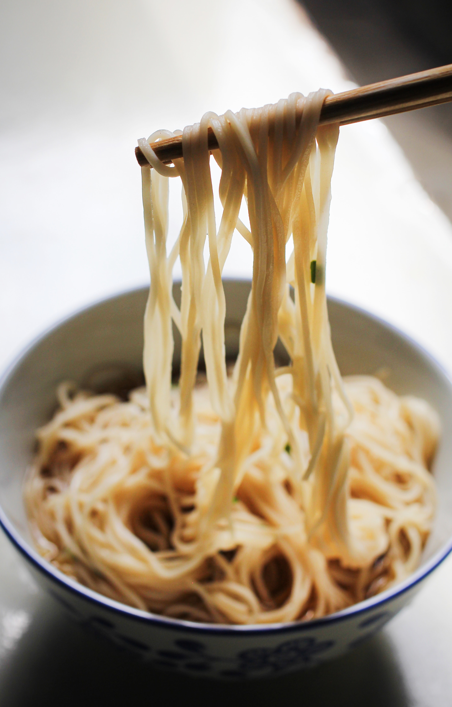
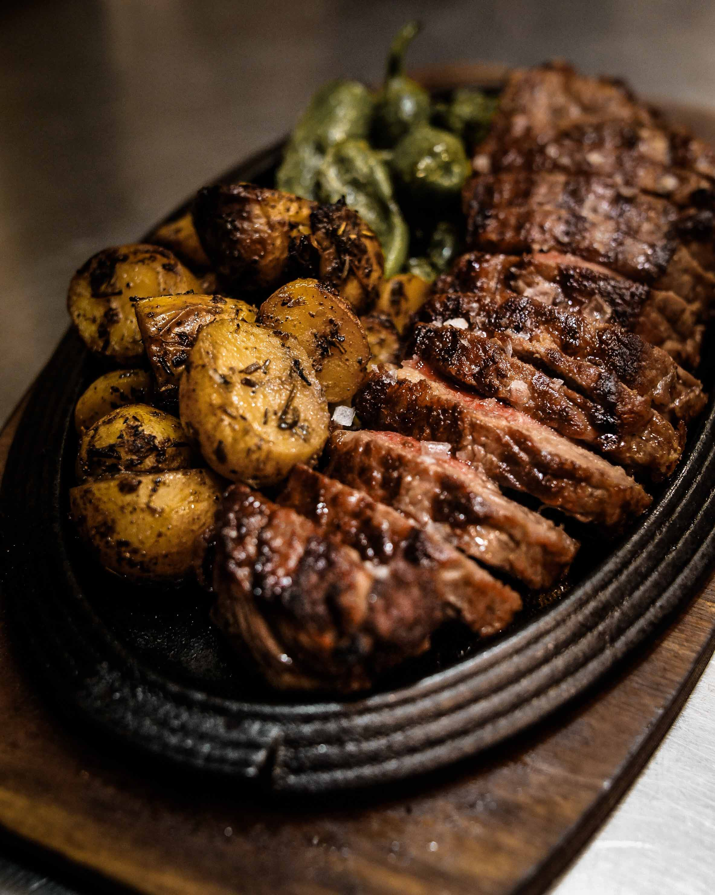

Elegí tu receta y disfruta de hacerla realidad…

Pastas
Tallarines caseros
Ingredientes:
- 1 huevo
- 100 gr de harina 0000 (aunque también se puede usar 000)
- 1 cda de aceite de oliva
- Una pizca de sal
Preparación:
- Poner la harina y la sal en un bol, integrar y hacer un hueco en el medio. Agregar el huevo y el aceite si eligen agregarle. Batir un poco con una cuchara o tenedor y unir en una masa.
- Una vez que se haya integrado todo muy bien a amasar! Amasar unos 15 o 20 minutos y dejar descansar por media hora.
- En este paso hay que estirar la masa: ya sea con máquina de pastas o con un palo de amasar el proceso es el mismo. Hay que estirar la masa, doblarla y volverla a estirar. Una y otra vez hasta que quede del grosor que estamos buscando. Si es con la máquina hay que ir bajando un número cada vez, si es con el palote hay que amasar con más fuerza!
- Se debe cortar en la forma que se prefiera, se espolvorea con harina y se deja orear unos 30 minutos
Chef tip:
Recomendamos acompañar esta receta con una salsa boloñesa
Tipo de cocción:
Cocina tradicional
Bebida recomendada:
Vino tinto variedad malbec

Carnes
Peceto al horno con verduras
Ingredientes:
- 1 Peceto de 1.5kg
- 4 Pimientos verdes
- 2 Pimientos rojos
- 4 Papas grandes
- 4 Cebollas medianas
- 5 Dientes ajo
- Sal a gusto
- Aceite a gusto
- 1/2 Litro caldo de verduras
Preparación:
- Pinchar en el peceto e introducir los dientes de ajo para dar más sabor.
- En una sartén grande colocar un poco de aceite, poner el peceto para que se dore e ir dando vueltas para sellar hasta que esté cocido por todas partes.
- En una fuente colocar las verduras cortadas en bastones y las papas en rodajas, preparar con sal y aceite y mezclar
- Hacer lugar en el medio de las verduras y colocar el peceto, poner unos 350cm² del caldo y reservar el resto por las dudas para ir agregando.
- Colocar en el horno a 200° durante 2 horas, cada 30 minutos ir girando para que no se seque
Chef tip:
Recomendamos se puede suplantar las papas al horno por un pure mixto
Tipo de cocción:
Horno de barro / cocina tradicional
Bebida recomendada:
Vino tinto variedad malbec